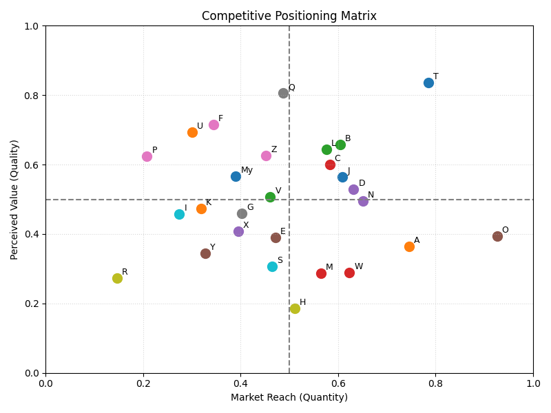
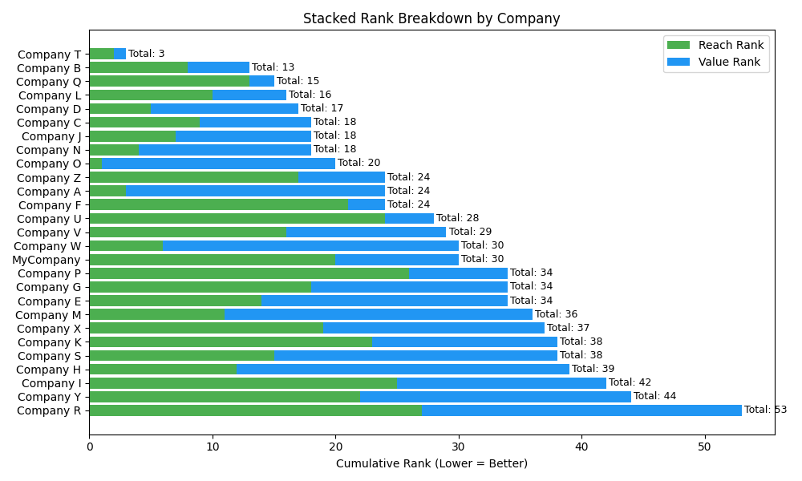

Understanding Strategic Placement Through Reach and Value
In a competitive landscape, it’s not enough to simply operate at scale — companies must also deliver perceived value to customers in order to build loyalty and defend market share. The challenge lies in understanding not only where a company stands compared to others, but why it stands there — and what can be done to move it.
This project uses a simulated dataset to analyze and visualize competitive positioning through two core dimensions:
Steps:


My Company is positioned squarely in the middle of the competitive field. Its Market Reach outweighs its Perceived Value by a factor of 2.5, indicating that while the company has successfully scaled its presence, it has yet to achieve proportional differentiation in the eyes of customers.
To move into the top 3 strategic performers, we recommend a 30/70 resource split:
This rebalancing effort will help shift the company upward on the value axis — turning reach into defensible advantage.